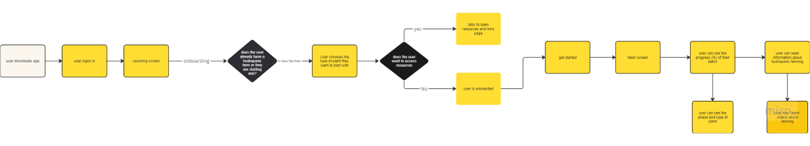

Logit mobile design
How might we help hydroponic farmers manage their farms effortlessly?
Role: UX Designer

Logit mobile design
Role: UX Designer
Logit is a mobile app for new hydroponic farmers looking for a way to keep up with crop maintenance and learning about managing their farms. Logit is a hackathon submission for the Calgary Maker Faire that placed 2nd place.

This May I had the opportunity to participate in the Calgary Maker Fair designathon alongside talented Canadian students. Our prompt was to design a user interface for hydroponic farming. From May 3-5 I had the honor to meet other participants, research, wireframe, prototype and pitch my project remotely to the judge panel.

"You've been recruited by Dropit to create a sleek and intuitive interface that helps users manage hydroponic farms!" Given that prompt I asked myself the following questions;
Throughout my research, I felt overwhelmed with the amount of steps a farmer would need to perform in order to maintain a healthy farm. Logit would help these users struggling to keep up with things such as crop scheduling and crop maintenance and help them maintain a healthy farm.

Defining the user's onboarding task flow
I thought making a value proposition canvas would help me solidify and identify Logit as a product. What makes Logit better, what pain points would it solve, and what are the user's job?

We were advised to design 3-5 screens with one of them being hi-fidelity. I chose screens that would highlight the main tasks a user can perform in Logit such as the main screen with the system display, how I intended for the digital logbook to look like and how users would make changes in Logit
Highlighting the main screen, my submission focused on showing the main components of Logit and how it's features would help hydroponic farmers with maintaining their crops.

Pitching the project live was nerve wracking and I had a few minutes to sell Logit as a product but also showcase my design thinking skills. How I approached the experience was balancing my design process, the product and talk about future iterations as I went on. Overall I think sprinkling in my thought process and being honest about what I knew or did not know helped Logit shine alongside the design thinking and solving a problem in the hydroponic farming space. Finally, I think there is something special about pitching live even though I was nervous, I think it made me go hard on highlighting my work!

This screen went through color adjustements and sizes adjustements. The orginal felt static and unrealistic so I opten for smaller squares and no picture. I also struggled with finding a way to add new plants to the system so in the second round I went for a minimalistic plus button.

This screen went through color adjustements and sizes adjustements as well. Through iterations I wanted to play around with style a little bit with the aim of making it fun. I wanted a clear display of stystem where users can switch from months or years and be aware of the data's time.

The second round I realized Logit was not giving a choice to users so I changed the layout while still maintaining the advice being given to users


During my pitching I explained how I only had assumptions for the empathizing phase as I did not conduct research. Recently, I learned from a mentor how personas, and journey maps hold value when validated. With that being said, for future opportunities I would want to research and understand the problem space more from hydroponic farmers and confirm or deny my hypothesis. I also explained that this would help me better understand the needs of hydroponic farmers and explain some of my questions such as: “do all farmers keep a log book or feel a need for one?” This would make Logit a worthy tool for hydroponic farmers across the globe.